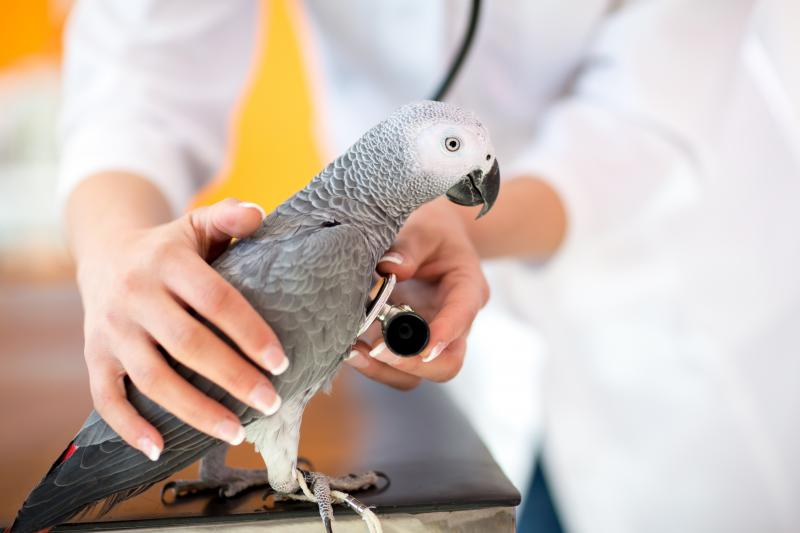
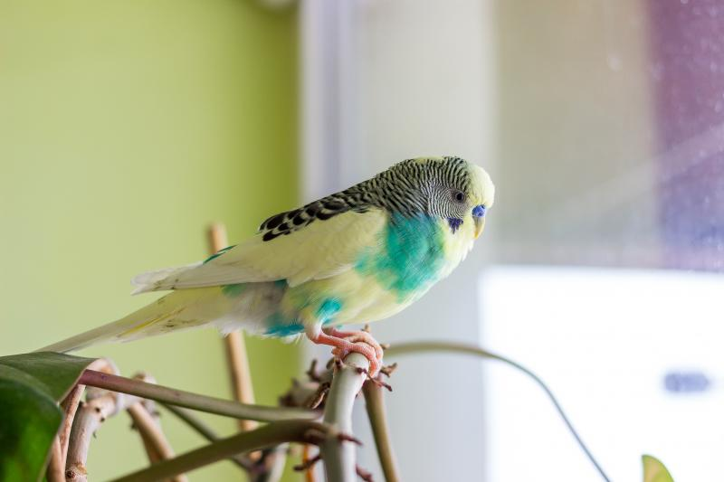
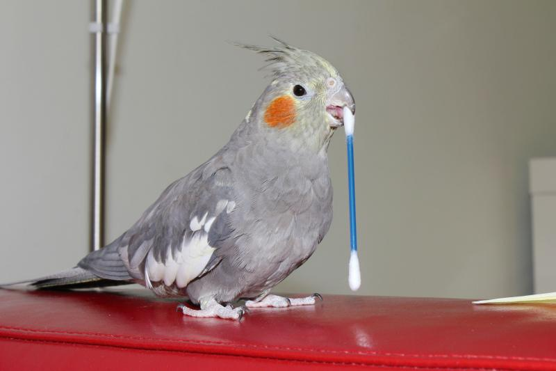
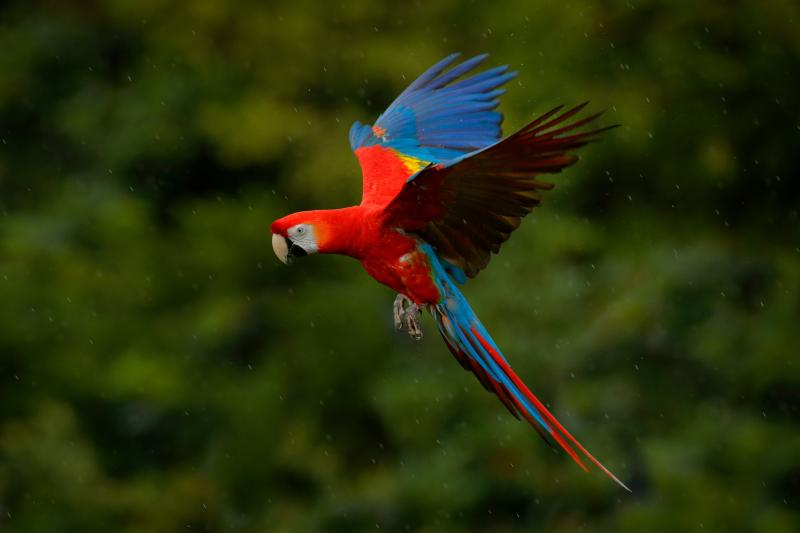
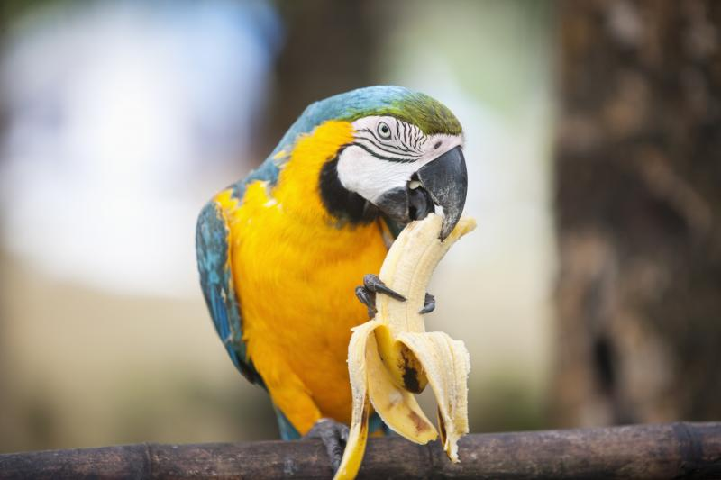

Papagalii au nevoi speciale, la fel ca majoritatea pasarilor tinute ca animale de companie, si trebuie sa iei in considerare ingrijirea de care au nevoie inainte de a adopta. Iata tot ce trebuie sa stii inainte si dupa ce aduci noul membru al familiei acasa:
Evita pet shop-urile
Majoritatea magazinelor iau pasarile din ferme unde papagalii cresc in conditii ce lasa de dorit, dupa care ii tin in custi majoritatea timpului. Nu este un mediu ideal pentru niciun animal si ar fi ideal sa iti iei papagalul din alte surse, pentru a nu contribui la cererea masiva din pet shop-uri si fermele de animale, conform PetMD.
Te poti interesa daca exista crescatori de papagali in zona ta si daca animalele sunt crescute intr-un mediu confortabil. Daca poti adopta un papagal, cu atat mai bine.
Citeste si: Motivul pentru care inca mai poti cumpara specii pe cale de disparitie din pet shop-uri
Consulta un medic veterinar

Indiferent de unde ai luat papagalul, un consult veterinar este necesar pentru a verifica starea de sanatate a animalului. Pasarile se pot imbolnavi foarte usor, iar un medic veterinar te poate indruma catre un tratament eficient.
Citeste si: Vrei sa adopti o pasare, dar nu stii de unde sa incepi? Top 3 pasari pentru novici
Asigura-te ca ai o locuinta confortabila

Papagalii sunt foarte sensibili si au nevoie de un mediu confortabil. Dintre toti factorii care pot influenta sanatatea noului membru al familiei, aerul este unul dintre cei mai importanti.
Papagalii se pot imbolnavi usor daca sunt expusi la fum de tigara si produse chimice care se gasesc in fixativ sau anumite produse de curatat. Trebuie sa te asiguri ca papagalul tau isi petrece majoritatea timpului intr-o parte bine ventilata a locuintei.
Citeste si: Cea mai fotogenica pereche de papagali. Stapana n-a crezut ca se vor intelege, dar sunt de nedespartit
Pune la punct un plan de curatenie

Papagalii au un apetit iesit din comun si vor manca toata ziua. Din pacate, nu sunt cele mai curate animale atunci cand vine vorba de hranit si au tendinta sa lase mancare peste tot.
Mai mult, sunt programati sa ciuguleasca lemnul si materiale asemanatoare, asa ca trebuie sa te gandesti cum va arata locul in care papagalul tau isi va petrece majoritatea timpului. Nu este iesit din comun ca un papagal sa roada cabluri sau perdele, in special pana se acomodeaza in noua lui casa sau pana va fi antrenat.
Citeste si: Top 5 pasari care pot “vorbi”. Ce pasare poate imita vocea umana
Lasa-l sa zboare

Niciunui animal nu ii place sa stea in cusca tot timpul. Papagalul tau a fost creat sa zboare si va aprecia libertatea pe care i-o oferi. Atentie, zborul trebuie sa aiba loc intr-un spatiu inchis, cu geamurile inchise si oglinzile acoperite pentru a evita accidentele.
Citeste si: A fost doborat recordul pentru cea mai lunga migratie surprinsa vreodata
Trebuie sa ii oferi o dieta variata

Mancare speciala pentru papagali ii va oferi o mare parte din nutrientii de care are nevoie, dar aceste pasari au nevoie si de graunte si fructe. Discuta cu un medic veterinar inainte de a lua orice decizie privind dieta papagalului tau.
- Te-ar putea interesa si:
- Vietuitoarea care poate realiza calcule complexe si intelege probabilitati “la fel ca oamenii”. Ce specie e extrem de inteligenta
- Cum poate salva tehnologia specii pe cale de disparitie. Povestea uimitorului papagal Kakapo
- Papagalii altruisti: ce specie inaripata ii ajuta pe cei aflati in nevoie, fara sa primeasca ceva la schimb